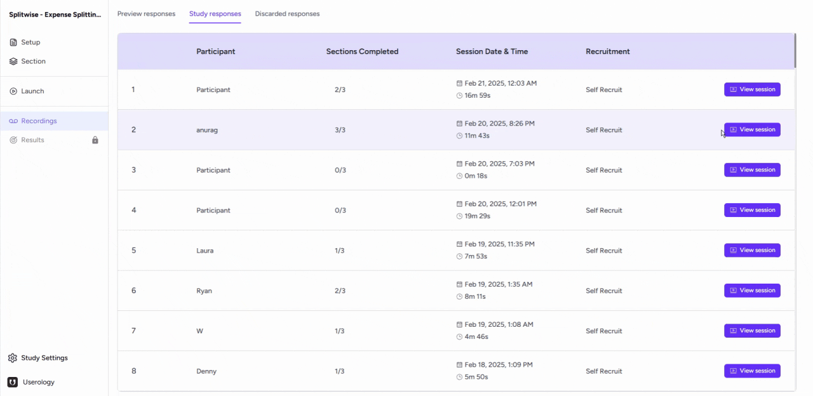
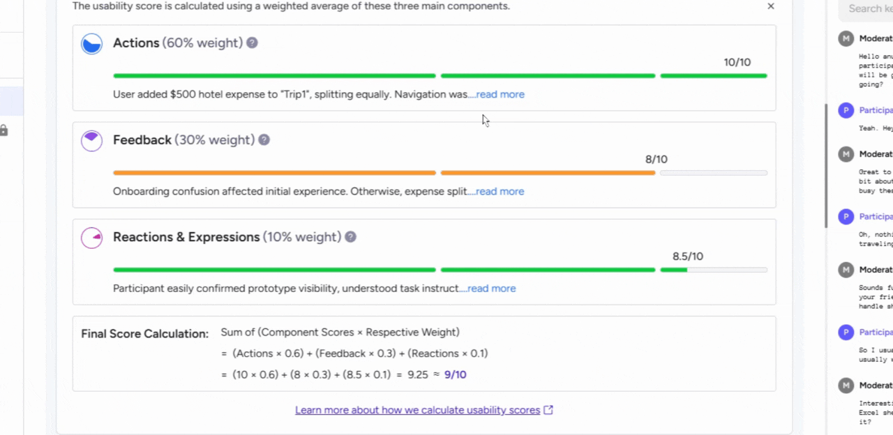
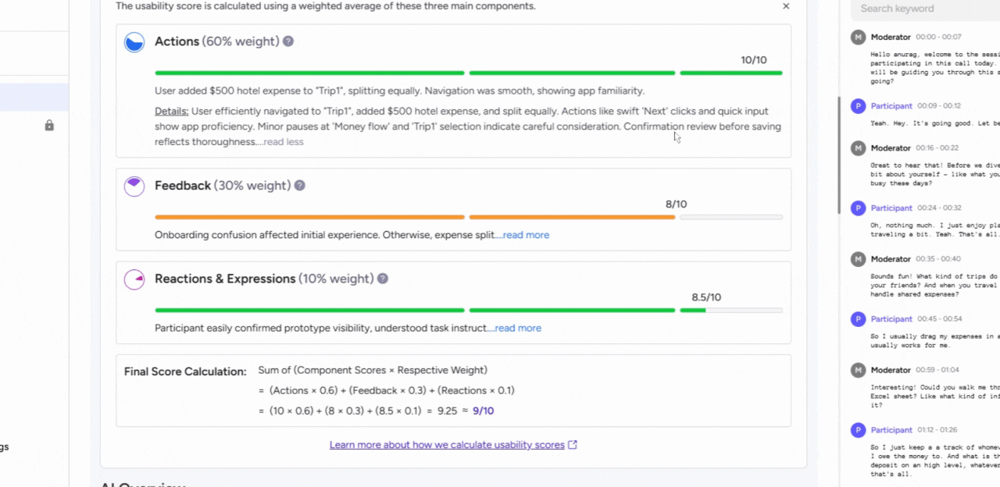

Accessing the Usability Score
To view the usability score for a participant in Userology, follow these steps:
-
Navigate to the Recording tab of your study.
-
Select View session for the participant you want to review.
-
Scroll down to locate the usability score section. This score reflects the ease or quality of task performance based on the participant's actions.
-
Expand the score section to see specific tasks where the participant's performance was evaluated.

Components of the Usability Score
The usability score is a weighted average of three key components. Each component evaluates a specific aspect of the participant's interaction:
- Actions (60%)
This measures task completion efficiency, navigation patterns, and interaction quality. It assesses how effectively users achieve their goals within the interface, using both observable behaviors and quantitative metrics.
- Feedback (30%)
This includes explicit ratings, verbal inputs, and comments. It captures ease of use, suggestions for improvement, and overall satisfaction expressed by the participant.
- Reactions and Expressions (10%)
This evaluates non-verbal cues such as facial expressions, body language, and emotional responses during the session.

Detailed Summary of the Score
Each component includes a detailed summary that explains the assigned scores. To view these summaries:
-
Click on Read more within the usability score section.
-
Review the breakdown for each component to understand the participant's performance.

Learning More About the Usability Score
For a deeper understanding of how the usability score is calculated, Click on the provided link in the usability score section.

If you need further help, please email us at support@userology.co